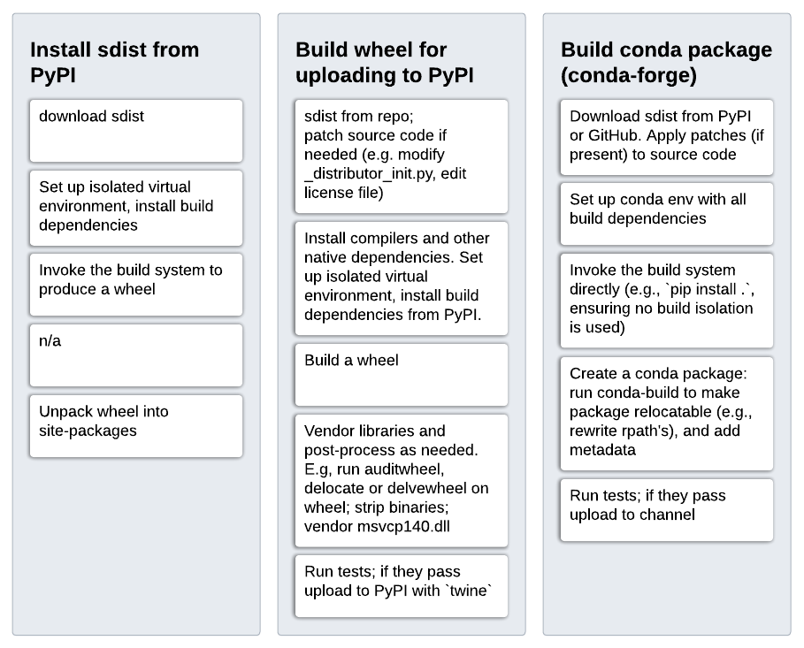

Build & package management concepts and terminology
Having a clear picture of how build systems, package and environment managers interact and using terminology that is well-defined is important when discussing any concrete issue around using native code/dependencies. This section attempts to provide such a picture.
We'll start with build & packaging concepts and design; if terminology is unclear, please refer to the terminology section further down.
Package/dependency management & build systems
When using a dependency in a package at build time, we need it installed first. Installing and using are well separated: the former is done by the package manager, the latter by the build system.
Package managers need metadata - typically as a separate metadata file in a
specific format, including applicable version constraints - to be able to
manage dependencies. This is done in similar ways across package managers.
As an example, this is what that looks like for a package depending on
pybind11 version 2.4.3 or later:
For PyPI we have a pyproject.toml file:
[build-system]
requires = ["pybind11>=2.4.3"]
For Conda we have a meta.yaml file:
requirements:
build:
- pybind11 >=2.4.3
For Spack we have a package.py file:
from spack.package import *
class PyMypkg(PythonPackage):
depends_on("py-pybind11@2.4.3:", when="@1.9.1:", type=("build", "link"))
For Homebrew we have a pkgname.rb file:
class Pkgname < Formula
depends_on "pybind11"
>=2.4.3 version constraint, because Homebrew provides only a
single version per package.
For Nix we have a default.nix file:
{ lib
, pybind11
}:
buildPythonPackage rec {
buildInputs = [pybind11];
>=2.4.3 version constraint, because Nix provides only a
single version per package.
At build time, the package manager is used to ensure that a dependency is installed before the build system is invoked. Inside the config files for the build system, the dependency can then be used:
For setuptools we use a setup.py file with:
import pybind11
incdir_pybind11 = pybind11.get_include()
ext_modules = [
Extension('_uses_pybind',
['src/main.cpp'],
include_dirs=[incdir_pybind11],
)
]
For Meson we use a meson.build file with:
incdir_pybind11 = run_command(py,
['-c', 'import pybind11; print(pybind11.get_include())'],
check: true,
).stdout().strip()
inc_pybind11 = include_directories(incdir_pybind11)
py.extension_module('_uses_pybind',
['src/main.cpp'],
include_directories: [inc_pybind11],
)
Note: the above should be replaced by this once pybind11 support is built-in:
dep_pybind11 = dependency('pybind11')
py.extension_module('_uses_pybind',
['src/main.cpp'],
dependencies: [dep_pybind11]
)
For CMake used through scikit-build we use a CMakeLists.txt file with:
find_package(pybind11 CONFIG REQUIRED)
pybind11_add_module(_core MODULE src/main.cpp)
Important
There are quite a few build systems and even more different package managers. These can be mixed and matched1 2 - each build system can be used in any package manager.
Types of package managers
The word "package manager" is applied to a wide variety of tools. It is helpful to distinguish two different types of package managers.
(A) System package managers:
- Single version of each package (so may not need a solver for dependency resolution)
- All libraries needed for a functioning system (sometimes modulo
libc) - Multi-language
- Single-platform (often, not always)
- Examples: Linux package managers (APT, RPM, Pacman, YUM, etc.), Homebrew, Nix, Guix
(B) Dependency package managers:
- Multiple versions of each package at the same time (key ingredient: dependency resolution)
- Single language (often, not always)
- Multi-platform
- Examples: Pip, Poetry, NPM, Cargo, Conan, vcpkg, Pkg (Julia), RubyGems, NuGet
Additionally we have (C) Environment managers:
- Allow using different sets of packages - possibly including compilers, language runtime, and package manager.
- Examples: venv, virtualenv, pyenv, nvm, RVM, nix-shell
Important
A key point to understand is that dependency package managers rely on a system package manager to provide packages that are not present in the dependency package manager's repository. See native dependencies.
This classification isn't perfect. Some tools given as above touch more or less of another category they're in. Or they span multiple of the three categories and some don't quite fit. A few of the most prominent examples:
- Conda spans all three categories: it relies on
libcfrom the OS, but includes all other "system" packages, supports multiple versions for all packages, and supports environments. - Spack is quite similar to Conda, at least in this classification. The main differences are that (a) it defaults to building from source on the user system (with a binary cache system), and (b) it treats compilers differently; they can come from the system, but Spack does know about them and allows using multiple compilers in a controlled fashion.
- Chocolatey provides some system-like packages like compilers (Clang, Mingw), Microsoft Visual C++ Redistributable's and Python interpreters - but its packages are mostly self-contained and it only handles a few dependencies in a minimal fashion.
What about PDM, Hatch, Pipenv, Nox, Tox & co.?
These are all more developer tools - they provide a UX for environment and dependency management, but rely on Pip, venv/virtualenv for dependency resolution and environment creation and (de)activation. Alternatively, one could say that they are dependency plus environment managers. The characteristics of their behavior will still be determined by the tools they wrap though, so for the purposes of discussing Python packaging design as it relates to dealing with native code it's not too useful to consider them separately.
Building and installing or uploading artifacts
Now that we have all the needed concepts for "building a package", let's look at how that works at a conceptual level. An artifact is an output of building a package - this can be an sdist, a wheel, or a binary in a different format. When a build gets triggered, either by a user or by an application or automated system, these are the phases of the process that follows:


Those phases are more or less the same, independent of which package manager is used or whether we're building for the local system or for redistribution.
Note that the build frontend and build backend may be involved in one or more places. Their role is to trigger the package manager and build system, and handle the metadata of the package appropriately and communicate it to the package manager and build system.
The details of every step above may be different. Here this is worked out for three concrete cases: (a) installing an sdist from PyPI, (b) building a wheel for redistribution on PyPI, and (c) building a conda package for redistribution on conda-forge:

Terminology
Build system - the tool responsible for "building" a package. Note that there can be multiple interpretations of what that actually means. Here we take the operational definition that it is the tool for which you write your build configuration files. So:
setup.py-> setuptoolsCMakelists.txt-> CMakemeson.build-> MesonMakefile-> makeSConstruct-> SCons
This definition is probably the most commonly used one across technologies and language ecosystems, and can be applied irrespective of whether or not a package contains native code3 , or whether or not the build system invokes a compiler directly or via a backend (e.g. CMake and Meson may use Ninja for that).
Build frontend - the tool that is invoked by a user or by another tool to build a wheel or sdist (e.g., pip or pypa/build). See PEP 517 for a more detailed description.
Build backend - the tool that is invoked, via the build-backend hook in
pyproject.toml, by a build frontend and is responsible for returning a wheel
or sdist to that frontend (e.g.,
setuptools,
Flit,
meson-python,
scikit-build-core or
hatch).
The build backend may be part of a build system, or it may be a fairly thin
layer in between the build frontend and the actual build system.
Installer - a tool that accepts a set of package requirements, and installs these packages on the user's system. Note that "installer" is named "integration frontend" in PEP 517. The latter term does not seem to be commonly used.
Problems
One problem here is social. The Python packaging community tends to think in
terms of PyPI, wheels and sdists almost exclusively. With a lot of focus on
build frontends and build backends. For the process of building a binary, a
wheel is not that different from an RPM, Debian or Conda package. Those often
go through a wheel as an intermediate step, and use tools like pip. Packaging
terminology and tool design should make room for this - wheels are not that
special, they're a zip file containing a built package plus its metadata. The
most important thing about wheels are the specifications around how the
binaries inside them should be built and on what systems they are expected to
work. In terms of the build process itself, what the build system does is by
far the most time-consuming and complex part of producing a binary. A build
frontend only has set up a clean build environment4 and to invoke a backend,
passing along CLI options if given. A build backend is a thin layer, whose main
purpose is to invoke the build system, and then add the relevant metadata to
the final wheel.
There are lots of practical issues not discussed on this page (e.g., wheel tags are poorly documented and are a constant source of bugs and maintenance effort), however those can be dealt with one by one. That is outside the scope of this "meta topic".
History
TODO
Relevant resources
TODO
Potential solutions or mitigations
- Better documentation and more education around how build & packaging works.
- ... ?
-
All-in-one systems like Bazel, Buck and Pants are the exception. Those are primarily used inside large companies where a single way of working is enforced, either through a monorepo or other tooling and ways of working. The build system parts of such systems can still be integrated with other package managers (e.g., TensorFlow is built with Bazel and distributed as wheels and conda packages) - but that is typically challenging. We won't consider that further here. ↩
-
This is not true for the packages/libraries themselves though, which in the vast majority of cases have only a single build system. Exceptions include: TODO SCIPY PYTORCH ↩
-
Note that in very simple pure Python cases, the "build configuration" may be no more than static metadata that is all contained in
[tool.build-system-name]table inpyproject.toml. ↩ -
Often a build frontend does not have to set up a build environment. By default
pipandpypa/builddo set one up, but disabling build isolation with--no-build-isolationor--no-isolationis quite important, both for local development and for building artifacts other than wheels for redistribution. Whether or not to default to build isolation was a long debate, and there are pros and cons either way. ↩